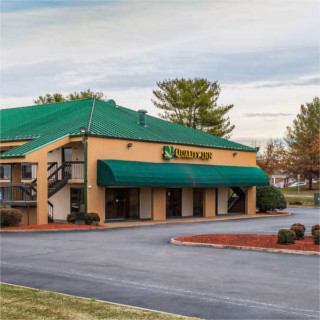
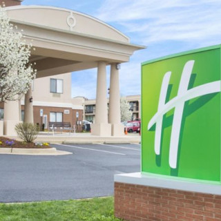
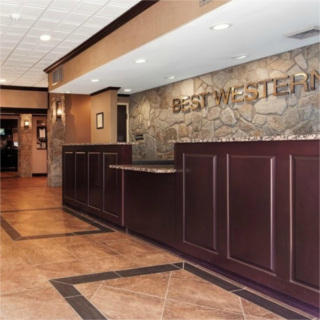
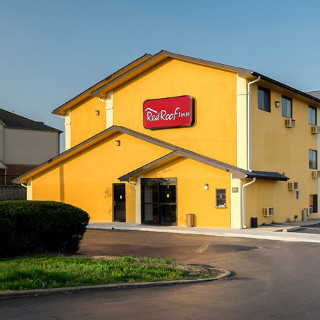
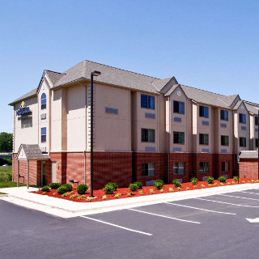
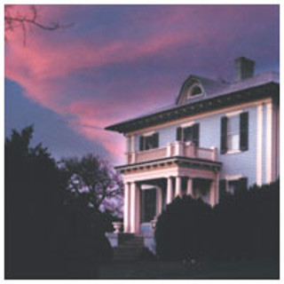
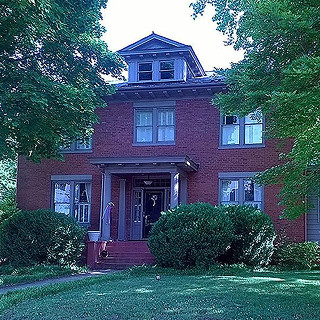

Accomodations
Thank you for visiting our wedding website! We are so excited to share our special day with you!
Listed below are local options for staying in Culpeper, Virginia for the event and directions to the venue.
1. Quality Inn Culpeper890 Willis Lane, Culpeper, VA, 22701, US
Fax: (540) 825-4904
Front Desk: (540) 825-4900

"The Quality Inn hotel in Culpeper lets you relax and focus on the people and experiences you came for... Our Value Qs deliver professional, responsive and friendly service, as well as amenities that give you more for your hard-earned money like:
- Free hot, fresh, and healthy breakfast
- Free WiFi
- Seasonal outdoor pool
- Free weekday newspaper
- Free coffee
Each guest room offers a refreshing shower, microwave and refrigerator, along with an iron and ironing board. Your Q Bed features a comfortable, premium mattress and linens, a generous supply of fluffy pillows and a soft, plush blanket-because we know how much you value a good night's sleep.
Get your money's worth at the Quality Inn. Culpeper hotels like ours offer the best hotel rates and the best amenities, so you can focus on the people and travel memories that really matter. Book today!"
2. Holiday Inn Express & Suites787 Madison Rd. , Culpeper, VA 22701 , US
Reservations: 1-888-HOLIDAY
Front Desk: 1-540-8257444
.
"Our Culpeper Hotel Offers Close Access to the Best of the Piedmont River Valley
The Holiday Inn Express Hotel & Suites Culpeper, in the quaint horse country of Virginia, is an ideal destination for history buffs, & wine connoisseurs...
Situated in the Piedmont River Valley, provides close proximity to several of Virginia's most historic sites & attractions. Many important Civil War battlefields are also nearby, including Brandy Station, Cedar Mountain and Kelly's Ford. Famous homes within 30 minutes of our Culpeper hotel include James Madison's Montpelier home and Thomas Jefferson's Monticello home. Additionally, our hotel is near the Gray Ghost, Prince Michel & Unicorn vineyards. Tours and tastings are offered at these Culpeper vineyards daily.
When you stay at our hotel in Culpeper, take advantage of the indoor pool and fitness center. Before heading out for the day, you can stop by the hot breakfast bar featuring our signature cinnamon rolls. Reserve your Culpeper hotel reservations today & see the beautiful sites and historic attractions that Virginia has to offer."
3. Best Western Culpeper Inn791 Madison Road
Culpeper, Virginia 22701 US
Reservations: 1(800)780-7234
Front Desk: (540) 825-1253

"Welcome to Best Western Culpeper Inn!
...
We're the only full-service hotel in Culpeper, and we pride ourselves on offering a quaint, authentic experience along with the amenities you deserve, like luxury bedding. With easy access to all the top destinations along with an outdoor pool, everything you need can be found at our Culpeper hotel.
...
The beautiful courtyard of our Culpeper hotel is a favorite place for guests to relax. If you'd like tips and advice on sightseeing, just ask one of our friendly staff members. Everyone is local and knows the ins and outs of the area. From fine dining to the best boutique shopping and antiquing, you'll get the insider's perspectives on the best of Culpeper.
...
Book a quiet room at Best Western Culpeper Inn and get ready for a relaxing, peaceful getaway! Enjoy your stay."
4. Red Roof Inn Culpeper889 Willis Lane, Culpeper, VA 22701 US
Reservations: 1-937-328-1837

"Located off of US-29...Red Roof Inn Culpeper offers newly-refreshed rooms in a quiet location.
All guest rooms include free Wi-Fi, extended cable television, flat screen TV, work desk, microwave and mini-refrigerator.
Free coffee and tea are available in the lobby.
Our bilingual staff speaks both Hindu and English.
Select rooms are ADA accessible.
One well-behaved family pet per room is welcome."
5. Microtel Inn & Suites Culpeper885 Willis Lane , Culpeper, VA 22701 US
Front Desk: (540) 829-0330

"Experience all historic Culpeper has to offer at our Microtel Inn & Suites by Wyndham Culpeper hotel. Our hotel near the Museum of Culpeper History is located near area attractions and even has a Culpeper Trolley stop onsite, giving you easy access to the entire town...
Start your morning off right with our free continental breakfast. Check email or look up attractions from the comfort of your cozy room with free high-speed Internet access, then take advantage of free passes to Gold's Gym. Our hotel is non-smoking, and accessible rooms are available...
Amenities:
24-Hour Reception Desk, Business Center, Coffee/Tea Maker, Cribs Available, Daily Housekeeping, Elevators, Free Breakfast, Free Parking, Free WiFi, Hairdryer, Near Public Transportation, Non-Smoking Hotel, Pet Friendly, Rollaway Beds Available, [and] Safe Deposit Box"
6. Fountain Hall Bed & Breakfast609 South East Street, Culpeper, VA 22701 US
Reservations: 1-800-298-4748
Front Desk: (540) 825-8300
Email: visit@fountainhall.com

"Welcome to Fountain Hall Bed & Breakfast in historic downtown Culpeper, Virginia where a memorable bed and breakfast experience awaits you. The bed-and-breakfast features a variety of accommodations including six tastefully appointed guest rooms each with a private bath and numerous amenities. Make your stay even more memorable by adding one or more packages to your room...
While staying with us, you can relax in one of the parlors, browse through our extensive library or watch a good movie. Card games, puzzles and board games are also available. Spacious common rooms and backyard make Fountain Hall B&B the ideal location for special occasion getaways, anniversaries or simply a place to rest and relax...
Culpeper's central location makes Fountain Hall an easy drive for a weekend getaway, overnight business travelers, and an ideal setting for mid-week visitors. Come experience the gracious accommodations and hospitality at Fountain Hall B&B in historic downtown Culpeper!"
7. West Park Gardens222 W. Park Avenue Culpeper, VA 22701 US
Front Desk: (540) 717-7797
Email: booking@222westparkavenue.com

"Northern Virginia bed and breakfast close to Washington, D.C., Charlottesville and Richmond. Guests arrive via Dulles International Airport, 60 miles from the property, and Culpeper Amtrak, only .6 mile. Convenient to hiking, horse shows, wineries and historic landmarks. Free continental breakfast served daily. Short walk to E. Davis Street for shopping and dining in downtown Culpeper.
...
Comfortable luxury in historic 1920 Colonial home. Choose from three guest rooms including Master Suite with Private Bath. Located in a safe neighborhood, West Park Gardens is convenient to hiking in Shenandoah National Park, local winery tours and Civil War battlefields. Same-day bookings are welcome. Pet friendly."